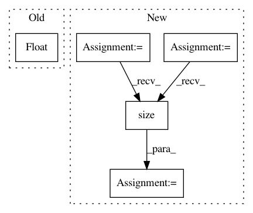

f749c4f713a6f365809713ca394326faf34ec34e,tests/test_distributions.py,DistributionsTestCase,test_dist_uniform,#DistributionsTestCase#,82
Before Change
dist_mean_empirical = float(dist_empirical.mean)
dist_stddev = float(dist.stddev)
dist_stddev_empirical = float(dist_empirical.stddev)
dist_log_prob = float(dist.log_prob(5))
util.debug("dist_mean", "dist_mean_empirical", "dist_mean_correct", "dist_stddev", "dist_stddev_empirical", "dist_stddev_correct", "dist_log_prob", "dist_log_prob_correct")
self.assertAlmostEqual(dist_mean, dist_mean_correct, places=1)
After Change
dist_sample_shape_correct = [1]
dist_means_correct = 0.5
dist_stddevs_correct = 0.288675
dist_lows_correct = 0
dist_highs_correct = 1
dist_log_probs_correct = 0
dist = Uniform(dist_lows_correct, dist_highs_correct)
dist_sample_shape = list(dist.sample().size())
dist_empirical = Empirical([dist.sample() for i in range(empirical_samples)])
dist_means = util.to_numpy(dist.mean)
dist_means_empirical = util.to_numpy(dist_empirical.mean)
dist_stddevs = util.to_numpy(dist.stddev)
In pattern: SUPERPATTERN
Frequency: 3
Non-data size: 5
Instances
Project Name: pyprob/pyprob
Commit Name: f749c4f713a6f365809713ca394326faf34ec34e
Time: 2018-02-16
Author: atilimgunes.baydin@gmail.com
File Name: tests/test_distributions.py
Class Name: DistributionsTestCase
Method Name: test_dist_uniform
Project Name: pyprob/pyprob
Commit Name: f749c4f713a6f365809713ca394326faf34ec34e
Time: 2018-02-16
Author: atilimgunes.baydin@gmail.com
File Name: tests/test_distributions.py
Class Name: DistributionsTestCase
Method Name: test_dist_normal
Project Name: rusty1s/pytorch_geometric
Commit Name: e60669c5aa467d5c11a508c01b37c4ed8e352fa6
Time: 2021-02-15
Author: matthias.fey@tu-dortmund.de
File Name: torch_geometric/nn/conv/supergat_conv.py
Class Name: SuperGATConv
Method Name: forward